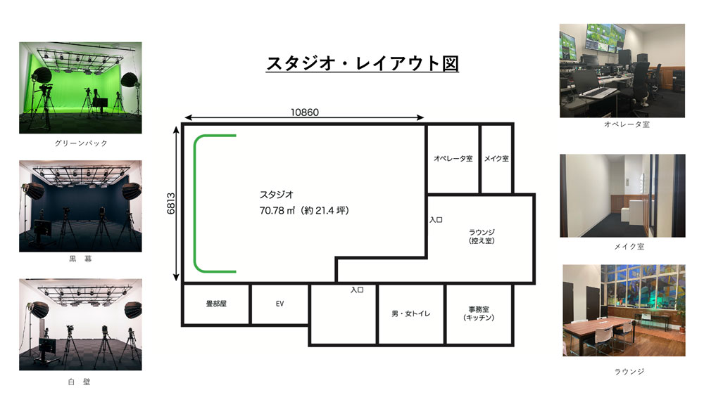
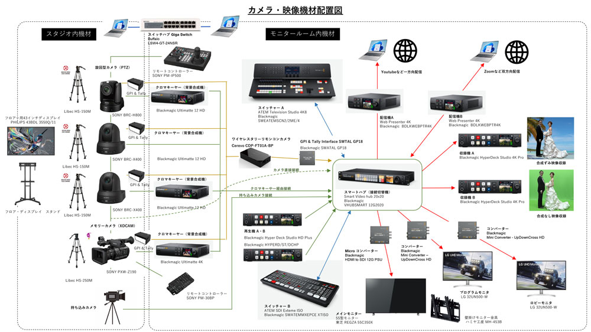
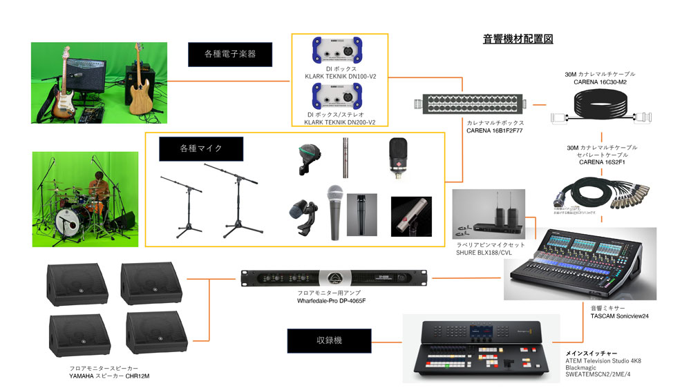
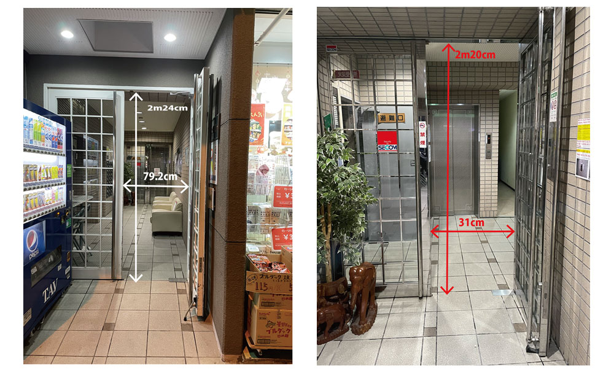

SHINSEKAIは、映像と音の同時収録（同録）、グリーンバック合成、マルチカメラ・スイッチング、高品位配信までをワンストップでご提供します。番組収録、CM撮影、音楽収録・配信、講演の収録・配信、インタビューなど、幅広い用途に最適です。
グリーンバックを常設。
Blackmagic Ultimatte
による背景合成、PTZカメラのリモートオペレーション、Web Presenter 4K での安定配信が可能です。
収録はHyperDeck Studio 4K Proで高ビットレート録画、ライブ配信はWeb Presenter 4KでYouTube等の一方向配信、またはZoom等の双方向配信に対応します。
音声はTASCAM Sonicview24を中心に、NEUMANNやSHUREなどのスタンダード・マイクで高品位に収音します。
※面積や天井高などの物理スペックは、既存ページの表記に合わせて追記・統一してください。

スタジオ内にはグリーンバック、黒幕、白壁の背景エリアを用意。ラウンジ、メイク室、オペレーター室を備え、収録〜待機〜整音をスムーズに行えます。ディスプレイ、モニタールーム、スイッチャー、ビデオハブ、ネットワーク、GPI & Tally までプロダクションに必要な系統を常設しています。





| 用途 | 機材名 | 数量 |
|---|---|---|
| PTZカメラ（4K） | SONY BRC-X400B | 1台 |
| PTZカメラ（4K） | SONY BRC-H800 | 2台 |
| メイン移動カメラ | SONY PXW-Z190 | 1台 |
| PTZリモート | SONY RM-IP500（PM-IP500） | 1台 |
| 用途 | 機材名 | 数量 |
|---|---|---|
| メイン・スイッチャー | Blackmagic ATEM Television Studio 4K8（SWEATEMSCN2/2ME/4） | 1台 |
| サブ・スイッチャー | Blackmagic ATEM SDI Extreme ISO | 1台 |
| 収録機 | Blackmagic HyperDeck Studio 4K Pro | 2台 |
| 再生機 | Blackmagic HyperDeck Studio HD Plus | 2台 |
| ビデオハブ | Blackmagic Smart Videohub 20x20 12G | 1台 |
| 配信機 | Blackmagic Web Presenter 4K | 2台 |
| コンバーター | Blackmagic Mini Converter UpDownCross HD／Micro Converter HDMI to SDI 12G PSU | 各種 |
| 用途 | 機材名 | 数量 |
|---|---|---|
| クロマキーヤー（背景合成） | Blackmagic Ultimatte 12 4K | 1台 |
| クロマキーヤー（背景合成） | Blackmagic Ultimatte 12 HD | 3台 |
| メインモニター | 東芝 REGZA 55C350X（壁掛け金具 MH-453B） | 1台 |
| スタジオ用ディスプレイ | PHILIPS 43BDL3550Q/11（43インチ） | 1台 |
| フロア／プログラムモニター | LG 32UN500-W | 2台 |
| 用途 | 機材名 | 数量 |
|---|---|---|
| 三脚 | Libec HS-150M | 3台 |
| 三脚（重荷重） | Libec HS-250M | 1台 |
| ワイヤレスインカム | HollyLand SOLIDCOM C1 Pro-HUB8S | 8台 |
| GPI & Tallyインターフェイス | Blackmagic SWTAL GP18 | — |
上記は仕様書掲載の代表項目です。機材の追加・入替により変動する場合があります。
| 用途 | 機材名 | 数量 |
|---|---|---|
| デジタルミキサー | TASCAM Sonicview24 | 1台 |
| フロアモニター | YAMAHA CHR12M | 4台 |
| パワーアンプ | Wharfedale-Pro DP-4065F | 1台 |
| コンデンサーマイク（ステレオペア） | NEUMANN KM184 | 1組 |
| ラージダイアフラム | NEUMANN TLM107 | 1本 |
| コンデンサーマイク | AKG C451B | 4本 |
| 楽器用ダイナミック | SHURE SM57 | 4本 |
| キック用 | AKG D112 MKII | 1本 |
| 太鼓用 | Sennheiser e904 | 3本 |
| ボーカル用 | SHURE SM58 | 4本 |
| ラベリア／ピンマイク | SHURE BLX188/CVL | 4本 |
| マイクスタンド（長） | K&M ST210/2B | 8本 |
| マイクスタンド（短） | K&M ST-259B | 6本 |
| DI | KLARK TEKNIK DN100-V2 | 1台 |
| DI（ステレオ） | KLARK TEKNIK DN200-V2 | 1台 |
| カナレマルチ | CARENA 16B1F2F77 / 16C30-M2 / 16S2F1 | 各種 |
| 用途 | 機材名 | 数量 |
|---|---|---|
| 撮影照明（吊り） | NEP COOLCAM P120 | 8台 |
| 撮影照明（置き） | NEP COOLCAM 600X | 2台 |
| 照明スタンド | NEP MYA25 / NEP Stand | 2台 他 |
| 演出照明（吊り） | SILVERSTAR CAM3/EMZ | 6台 |
| ホリゾントライト | AMERICAN DJ e904 | 6台 |
| 照明コンソール | Zero88 FLX S 24 | 1台 |
| DMXスプリッター／IF | e-light DMXS4W／e:cue | — |
| DMXケーブル | 各種 | — |
音楽ライブ／トーク・座談会／ウェビナー・研修／商品紹介・ECライブ／面接・会社説明会／番組収録 ほか